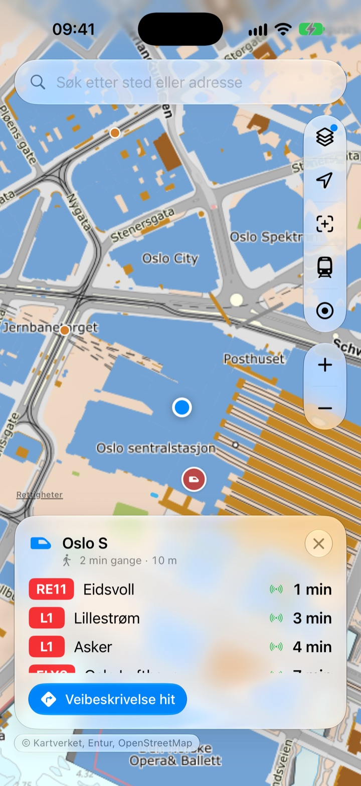

Everything you need outdoors, in one app
From a Sunday walk in the woods to a mountain hike in Jotunheimen and the train ride home. Varde uses data from the Norwegian Mapping Authority, the Norwegian Meteorological Institute, NVE and Entur.
Norway's official maps
Topographic, greyscale, toporaster, nautical charts and aerial imagery. Outside Norway, Apple's maps and imagery are used.
Trails and cabins
Marked hiking and cycling routes from the national trail database, and mountain cabins with the same symbols as ut.no.
Weather, snow and avalanches
Touch and hold the map for elevation, current weather, snow depth and ski conditions, avalanche warnings and tides at that exact point.
Viewshed analysis
See which parts of the landscape are visible from a point, accounting for terrain, forest, the curvature of the earth and lookout towers.
Trip planning
Directions by public transport, car, on foot and by bicycle, and routes via several places with suggestions for a faster order. With an elevation profile and spoken turn-by-turn guidance, also in CarPlay.
Public transport
Bus, train, tram and boat stops with real-time departures from Entur, and the nearest stop with a single tap.
Track recording
Record your trip, even with the screen locked, see it on the map and share the track as a GPX file. Open GPX files from other apps, give places, tracks and routes a name, note and folder, and show all your tracks, routes and places on the map.
Offline maps
Download the area you are heading to, including trails, before you go where there is no coverage.
Coordinates and crosshair
Search by coordinates, show them in four formats including UTM, and copy them with a single tap.
Norway's best maps, in your pocket
Varde shows the Norwegian Mapping Authority's topographic maps with contour lines, paths and hill shading, with trails, cabins and stops on top.
- Seven base maps: Apple Maps, Topographic, Greyscale, Toporaster, Nautical chart, Aerial imagery and Aerial imagery with labels
- Dim the base map so trails, cabins and the viewshed stand out
- Norwegian Trekking Association (DNT) cabins in red and other cabins in blue, with beds and a link to ut.no
- Tracking mode with north up or heading up


Touch and hold the map
A long press anywhere brings up a card with everything worth knowing about that exact spot.
- Terrain elevation from the Mapping Authority's laser data
- Current weather and a detailed forecast from the Norwegian Meteorological Institute
- Snow depth, new snow and ski conditions from seNorge, and today's avalanche warning from Varsom
- Next high and low tide at the nearest station
- Coordinates you can copy, and directions to the point


What can you see from the top?
Pick a point and tap “View”. Varde calculates which parts of the terrain are visible from there and colours them on the map.
- Terrain model from the Mapping Authority, with earth curvature and refraction
- Forest blocks the view, and you can choose how tall it is
- Stand in a lookout tower up to 50 metres tall to see over the treetops
- A forest edge right next to you is taken into account, however far you zoom out
- Zoom out to see further, and the view is recalculated

From your door to the summit, and home again
Plan your trip by public transport, car, on foot or by bicycle. Varde shows the alternatives and the elevation profile, and guides you along the way.
- Public transport journeys and real-time departures from Entur
- Routes via several places, with a mode of travel for each leg and suggestions for a faster order
- Spoken guidance, stop by stop, that finds a new route if you go the wrong way
- Works in CarPlay
- The nearest stop, with walking route and departures, in a single tap


Ready for the mountains, even without coverage
Download the maps before you leave, and record the trip as you go.
- Download the visible area at five levels of detail, including trails
- Maps you have viewed are saved too, so they show up offline later
- Track recording that keeps going when the screen is locked
- Share the track as a GPX file, and open tracks, routes and waypoints from other apps

See Varde in action
The screenshots show the app in Norwegian. With an English iPhone, Varde is in English.

Learn to use Varde
A complete guide with screenshots, from first launch to viewshed analysis, guidance and offline maps. Download it as a PDF and bring it along.
User Guide
English · PDF
DownloadBrukerveiledning
Norsk · PDF
Last nedYou can also read the guide in your browser.
Built on open Norwegian data
Warnings and elevations are indicative. Always use your own judgement in the mountains and at sea.
Privacy
Varde has no server of its own, no account, no tracking and no ads.
Coordinates are only sent to the services above when needed, for example to look up the terrain elevation where you are or to plan a trip. Tracks you record are stored only on your device.
Questions or suggestions?
Varde is developed by Knut Olav Sunde. Feedback, bug reports and ideas are very welcome.